ВЕДОМСТВЕННЫЕ СТРОИТЕЛЬНЫЕ НОРМЫ
ПРОЕКТИРОВАНИЕ
МОНТАЖНЫХ ПЛОЩАДОК
УГОЛЬНЫХ РАЗРЕЗОВ
ДЛЯ КОМПЛЕКТНО-БЛОЧНОГО МОНТАЖА
ГОРНОТРАНСПОРТНОГО ОБОРУДОВАНИЯ.
ТЕХНИЧЕСКИЕ ТРЕБОВАНИЯ
ВСН 513-88
Минмонтажспецстрой СССР
МИНИСТЕРСТВО
МОНТАЖНЫХ И СПЕЦИАЛЬНЫХ
СТРОИТЕЛЬНЫХ РАБОТ СССР
МИНИСТЕРСТВО УГОЛЬНОЙ ПРОМЫШЛЕННОСТИ СССР
Москва 1989
РАЗРАБОТАНЫ институтами:
Гипрохиммонтаж Минмонтажспецстроя СССР (И.П. Петрухин, М.Л.Эльяш - руководитель темы и ответственный исполнитель);
Центрогипрошахт (В.М. Еремеев, Ю.Б. Пильч, Ю.И. Трушкин) и Востсибгипрошахт (Э.П. Михайлов, А.Я. Дурасов) Минуглепрома СССР.
ВНЕСЕНЫ Специализированным объединением (СО) Химмонтаж Минмонтажспецстроя СССР и Главным управлением проектирования и капитального строительства Минуглепрома СССР.
УТВЕРЖДЕНЫ
Минмонтажспецстроем СССР - зам. министра В.П. Мардашов
и Минуглепромом СССР - зам. министра А.Г. Коркин.
|
Министерство монтажных и специальных строительных работ СССР (Минмонтажспецстрой СССР) Министерство угольной промышленности СССР (Минуглепром СССР) |
Ведомственные строительные нормы |
ВСН 513-88 Минмонтажспецстрой СССР |
|
Проектирование монтажных площадок угольных разрезов для комплектно-блочного монтажа горнотранспортного оборудования. Технические требования |
Введены впервые |
Настоящие нормы устанавливают технические (монтажные) требования к проектированию монтажных площадок угольных разрезов (далее - МП) для комплектно-блочного монтажа горнотранспортного оборудования (одноковшовых экскаваторов с ковшом вместимостью 4 м3 и более, роторных комплексов и магистральных конвейеров - далее оборудование), изготовляемых отечественной промышленностью и закупаемых по импорту, подлежащих монтажу организациями Минмонтажспецстроя СССР (далее - монтажными организациями) на объектах открытой добычи угля производственных объединений Минуглепрома СССР (далее -заказчик).
Нормы определяют также порядок участия монтажных организаций в разработке проектно-сметной документации на строительство угольных разрезов.
1.1. В задании на проектирование угольных разрезов в соответствии со СНиП 1.02.01-85 должно быть указано, что проект следует разрабатывать с учетом комплектно-блочного метода монтажа оборудования.
Требования к комплектно-блочному монтажу - по СНиП 3.01.01-85 и СНиП 3.05.05-84.
1.2. В общем случае МП должна выполняться в виде полигона, включающего комплекс инженерно-оснащенных сооружений для обеспечения поточно-скоростного монтажа оборудования.
|
Внесены СО Химмонтаж Минмонтажспецстроя СССР и Главным управлением проектирования и капитального строительства Минуглепрома СССР |
Утверждены: Минмонтажспецстроем
СССР 21 ноября 1988 г., Минуглепромом СССР |
Срок
введения |
1.3. Выбор МП производят заказчик и организация - разработчик проекта угольного разреза на стадии технико-экономического обоснования (технико-экономического расчета) с привлечением Гипрохиммонтажа (или организации по его поручению) в соответствии с приложением 1, руководствуясь следующими основными факторами:
возможностью транспортирования с предприятий-изготовителей в зону монтажа поставочных частей оборудования крупными блоками максимальной заводской готовности;
наличием требуемых площадей с минимальным объемом работ по их планировке и обустройству;
возможностью надежного обеспечения электрической и тепловой энергией, водой, сжатым воздухом, горючими и инертными газами, а также материалами и изделиями для производства монтажных работ;
возможностью использования на период монтажа существующих зданий и сооружений производственного, вспомогательного и административно-бытового назначения;
минимальным расстоянием перегона смонтированного оборудования к месту эксплуатации (для магистральных конвейеров - оптимальным положением МП с учетом транспортирования монтажных блоков оборудования по трассе конвейера);
наличием жилого фонда для размещения работников монтажных организаций во время монтажа с учетом пиковой численности.
Ответственность за выбор МП несет заказчик.
Техническое задание составляется на стадии проекта организации строительства (ПОС) по договору с разработчиком проекта угольного разреза.
1.6. Для составления технического задания разработчик проекта угольного разреза и заказчик передают организации, указанной в п.1.4, исходные данные и материалы, перечень и сроки передачи которых устанавливаются по соглашению сторон.
На заказчика возлагается предоставление этой организации документации предприятия-изготовителя оборудования, которая должна соответствовать требованиям ГОСТ 15.005-86, ГОСТ 24444-87, ГОСТ 14.201-83, ГОСТ 1.3-85, "Положению о проектировании, производстве, поставке, вводе в эксплуатацию, наладке и доводке комплексов машин, оборудования и приборов", утвержденному постановлением ГКНТ СССР, Госплана СССР, Госстандарта СССР, Госснаба СССР и Госстроя СССР от 12 декабря 1986 г. № 517/233/9/184/53, отраслевым НТД Минтяжмаша СССР в части заводской готовности, монтажной технологичности и комплектности оборудования (по импортному оборудованию должны передаваться также технические приложения к контрактам, составленные с привлечением монтажных организаций в соответствии с приказом Минуглепрома СССР, Минмонтажспецстроя СССР и Минтяжмаша СССР от 16 октября 1987 г. № 205/417/159), а также согласованным с Минуглепромом СССР РTM 36.14-89/Минмонтажспецстрой СССР.
1.6. В общем виде техническое задание на МП должно содержать:
общую компоновку участков для складирования, укрупнительной сборки поставочных частей оборудования и монтажа с указанием размеров участков в плане, видов покрытия и удельных нагрузок;
планы размещения оборудования в местах складирования и укрупнительной сборки;
планы подъездных путей для подачи оборудования в зону укрупнительной сборки и монтажа (железнодорожных путей, а также автодорог с указанием размеров, видов покрытия и нагрузок);
схемы установки основных грузоподъемных кранов и механизмов с планом расположения рельсовых путей и требования к их устройству;
размеры, вид покрытия и удельные нагрузки на пути для перемещения гусеничных и пневмоколесных самоходных монтажных кранов (то же - в местах их рабочих стоянок);
перечень, количество и технические характеристики грузоподъемных кранов и механизмов;
планы (при необходимости - разрезы) расположения закладных плит для установки опор и подъемных устройств, используемых при сборке и монтаже оборудования, с указанием величины и направления нагрузок, а также размеров приямков для подливки закладных плит;
перечень сооружений, требующих геодезического обоснования монтажных работ и разметки монтажной площадки в местах сборки поставочных частой оборудования в монтажные блоки;
план (при необходимости - разрезы) расположения закладных рельсов, решения по их выверке, а также план расположения заглубленных и других якорей и строительное задание на них для монтажа оборудования методом надвижки;
исходные данные для проектирования электроснабжения монтажной площадки с указанием расположения потребителей и электрических нагрузок, а также разводок для централизованного снабжения сжатым воздухом;
исходные данные для выбора зданий и сооружений производственного, вспомогательного и административно-бытового назначения;
пояснительную записку.
1.7. В сводном финансовом расчете на строительство угольного разреза должны быть включены все затраты на сооружение и обустройство монтажной площадки за исключением поставляемого комплектно предприятием-изготовителем оборудования специального инструмента, приспособлений и оснастки для укрупнительной сборки и монтажа оборудования (по номенклатуре и количеству, согласованному с заказчиком и монтажной организацией в установленном порядке). В ПОС должно быть предусмотрено полное обустройство МП не позднее чем за месяц до начала монтажных работ.
2.1. Общие размеры МП должны приниматься на основе вариантной проработки расположения мест складирования, укрупнительной сборки и монтажа оборудования из расчета оптимального использования грузоподъемных машин и механизмов и поточно-скоростного производства монтажных работ комплектно-блочным методом.
2.2. Для высокопроизводительных экскаваторов и роторных комплексов рекомендуемые общие размеры МП, мест открытого складирования, укрупнительной сборки и монтажа оборудования приведены в табл. 1.
Таблица 1
|
Размеры монтажной площадки, м |
||||
|
Общие |
в том числе места |
|||
|
складирования |
укрупнительной сборки |
монтажа |
||
|
ЭШ-10/70 |
75´175 |
40´75 25´70 |
- |
27´22 10´75 12,0´12,0 |
|
ЭШ-20/90 |
80´160 |
35´160 |
- |
20´100 30´36* 52´44* |
|
ЭШ-40/85 ЭВГ-35/65 |
150´250 |
25´85 30´125 |
20´85 20´125* |
25´45** 55´85* |
|
ЭШ-65/100 |
170´250 |
100´150 |
50´70* |
50´80** |
|
ЭШ-100/125 |
190´650 |
130´160 60´150 |
35´130 30´100 30´100 |
45´85** 45´150 |
|
ЭР-1250 ЭРП-1250 |
60´120 |
36´180 12´15 |
10´28* 12´60 |
24´28* |
|
ЭРП-2500 |
160´300 |
40´80 24´300 30´150 |
30´30* 15´45* |
30´50** |
|
ЭРШРД-5250 |
150´350 |
30´160 30´160 |
30´110* |
30´60** |
|
ПКЗ-5250 |
130´150 |
30´120 15´120 |
15´80 |
6´12* 6´6* |
|
ПМД-5250 |
100´300 |
30´150 |
30´50 |
30´50** 10´60* |
|
ПМВ-5250 |
30´180 |
|||
|
ОШР-5250/190 ОШР-5250/95 |
190´350 |
30´180 |
30´50* 30´180 |
30´60** 40´50* 40´150 |
Примечание. Площадки, не отмеченные знаком, должны иметь щебеночное покрытие (утрамбованный слой песка с уложенным щебнем и последующей обработкой его верхнего слоя битумом); площадки со знаком "*" - сборный железобетон (в том числе дорожные плиты); площадки со знаком "**" - монолитный железобетон.
2.3. Для складирования оборудования должен быть учтен расход деревянных шпал (под каждую поставочную часть оборудования или несколько частей, уложенных в штабель) из расчета удельного давления на грунт не более 0,16 МПа.
2.4. Удельное давление от массы оборудования и монтажных механизмов на площадку из сборного железобетона должно быть не более 0,32 МПа, из монолитного железобетона - 0,5 МПа.
2.5. Ширина проездов в местах складирования должна приниматься с учетом габаритов грузоподъемных и транспортных средств, технологии погрузочно-разгрузочных работ и действующие норм и правил по технике безопасности.
2.6. МП должны иметь железнодорожные пути для транспортирования поставочных частей к местам складирования, а от них - на площадки укрупнительной сборки и (или) к месту монтажа. Требования к проектированию пути - по СНиП III-39-76.
2.7. Полотно автодорог МП для перемещения поставочных частей оборудования на специальных транспортных средствах и передвижения самоходных монтажных кранов и механизмов должно проектироваться с учетом их габаритов и удельного давления, указанного в техническом задании.
2.9. Допуски (если они не регламентированы техническим заданием) на установку закладных плит должны указываться в строительных чертежах МП и быть не более (мм):
±5 - отклонение продольной и поперечной осей плит от проектного положения;
±5 - отклонение (в плане) осей анкетных болтов для крепления плит;
±2 - негоризонтальность опорных поверхностей плит на 1000 мм во всех направлениях;
±2 - разность высот между опорными поверхностями сопредельных плит.
2.10. В местах установки закладных плит на бетонном покрытии МП или фундаментах должны быть предусмотрены приямки для подливки закладных плит и деталей бетонной смесью после их выверки и закрепления.
2.11. При проектировании закладных рельсов для монтажа оборудования методом надвижки необходимо выполнить следующие требования (черт. 1):
несущая способность рельсов и их количество должны соответствовать нагрузкам, указанным в техническом задании;
Задание на закладные рельсы при монтаже оборудования методом надвижки
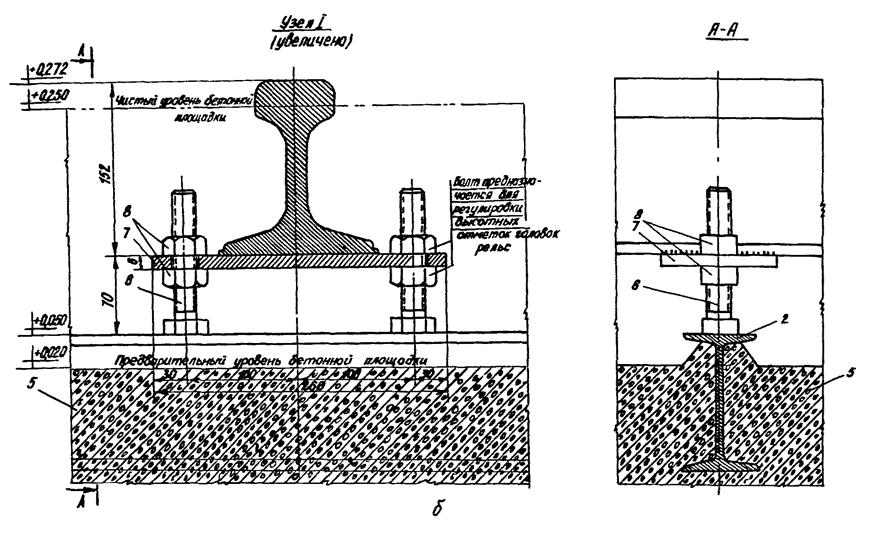
а - общий вид; б - узел 1; 1 - рельс Р-50; 2 - двутавр закладной; 3 - пакет подкладок; 4 - закладная деталь; 5 - бетонное покрытие МП; 6 - болт; 7 - полоса; 8 - установочные гайки
Черт. 1
точная регулировка положения рельсов между собой должна производиться путем предварительного бетонирования металлических балок в основном массиве бетонного покрытия МП (выступающих на 50 мм), приварки к ним болтов с установочными гайками и выверт рельсов по высоте на опорных металлических полосах с точностью ±2 мм в поперечном направлении и ±5 мм по всей длине;
под рельсами по их длине должно быть установлено с определенным шагом расчетное количество металлических подкладок, которые привариваются между собой и к закладным деталям МП;
рельсы в местах стыков должны иметь обработанные кромки и соединительные накладки;
подливка рельсов бетонной смесью должна производиться так, чтобы их головки выступали над подливкой на 25-30 мм;
бетонная поверхность между рельсами должна быть выровнена и параллельна плоскости головок рельсов.
2.12. Для разработки строительных чертежей заглубленного якоря монтажная организация должна передать организации-проектировщику МП технический проект закладных рам и деталей, а также эскиз нагрузок на якорь (черт. 2).
2.13. За нулевую отметку МП должен приниматься уровень головок рельсов железнодорожных подъездных путей. В строительной части проекта МП должны быть приведены решения по геодезической разбивочной основе для производства монтажных работ в соответствии со СНиП 3.01.02-84.
2.14. В строительных чертежах МП для контроля точности укрупнительной сборки из поставочных частей блоков оборудования в местах, определенных техническим заданием, должны быть предусмотрены репера для нанесения главных осей собираемого блока и линий монтажных стыков в плане поставочных частей оборудования (черт. 3).
В чертежах приводят требования:
главные оси нанести на МП белой масляной краской, а линии монтажных стыков поставочных частей - красной или синей шириной соответственно 5 и 20 мм;
конструкция закладных деталей для указания главных осей должна обеспечивать удобство их использования и сохранность на весь период монтажа;
выверку закладных плит (см. п. 2.8) следует производить после нанесения на МП линий монтажных стыков поставочных частей оборудования.
2.15. МП должна иметь необходимые дренажные устройства, обеспечивающие сток атмосферных и талых вод с ее поверхности.
2.16. Для производства монтажных работ в темное время суток на МП должно быть выполнено электроосвещение в соответствии со СНиП II-4-79. Освещенность МП на уровне покрытия должна быть (лк, не менее): в местах складирования оборудования - 30, в местах укрупнительной сборки и монтажа оборудования - 50. Преимущественно для освещения должны применяться устанавливаемые на мачтах прожекторы.
Требования к проекту электроснабжения МП приведены в приложении 2.
Задание на заглубленный якорь
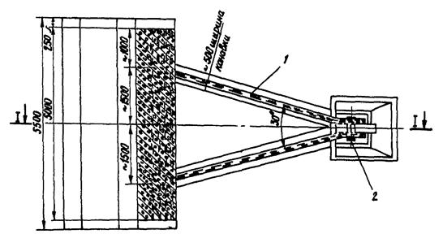
1 - рама; 2 - ось для крепления полиспаста; 3 - схема нагрузок на якорь
Черт. 2
Разметка МП в месте сборки поставочных частей оборудования в монтажный блок
1 - репер; 2 - закладные рельсы для надвижки монтажного блока; 3 - закладная плита; 4 - специальная опора; 5 - гидродомкрат; 6 - границы сборки монтажного блока; 7 - линии монтажных стыков поставочных частей; 8 - главные оси монтажного блока; 9 - ввод кабеля для сварочного оборудования; 10 - подкладка; 11 - закладная деталь; 12 - труба для установки знака репера
Черт. 3
3.1. При выборе основных грузоподъемных машин и механизмов для укрупнительной сборки и монтажа оборудования должна проводиться вариантная проработка с учетом блочности его поставки, фактического наличия у монтажной организации грузоподъемных машин и механизмов и технико-экономической целесообразности перебазирования их на МП с других объектов.
3.2. Для высокопроизводительных экскаваторов и роторных комплексов рекомендуемые основные грузоподъемные краны для укрупнительной сборки и монтажа оборудования приведены в табл. 2.
Таблица 2
|
Варианты набора грузоподъемных кранов для укрупнительной сборки и монтажа оборудования |
|||||
|
I |
II |
III |
IV |
V |
|
|
ЭШ-10/70 |
СКГ-63/100, (или СКГ-63) |
К-303 |
ЕДК-1000 |
МКГ-25 (2 шт.) |
МКГ-40, МКГ-25 |
|
ЭШ-20/90 |
CKГ-100, СКГ-63/100 |
УКП-63 |
ЕДК-1000 |
МКГ-40 (2 шт.) |
СКГ-63, СКГ-40 |
|
ЭШ-40/85 ЭВГ-35/65 |
БK-1000, СКГ-100, СКГ-63/100 (или СКГ-63), МКГ-25Бр |
УКП-63М, ЭКГ-20 |
БК-10000АМ, ЭКГ-20, ЕДК-1000 (2шт.) |
ЕДК-1000 (2 шт.), МКГ-40 |
СКГ-63/100, СКГ-40, МКН-85 |
|
ЭШ-65/100 |
БК-1000 АД, БК-1000, МКГС-100, СКГ-63 |
БК-1000АМ (4 шт.) |
БК-1000АМ (2 шт.), УКП-63М |
БК-1000АМ, ЕДК-1000 (2 шт.) |
- |
|
ЭШ-100/125 |
БК-1000, СКУ-1500, МКГС-100 (или СКГ-100), МКГ-25Бр |
EK-1000AM (4 шт.) |
БК-1000АМ (2 шт.), УКП-63М |
БК-1000АМ, ЕДК-1000 (2 шт.) |
- |
|
ЭР-1250 ЭРП-1250 |
СКГ-63/100 (или СКГ-63), МКГ-25Бр |
БК-1000 |
УКП-63 |
МКГ-Д5, (2 шт.) |
СКГ-40/63 (2 шт.), МКГ-25 |
|
ЭРП-2500 |
CKГ-100, СКГ63/100, СКГ-40, МКГ-25Бр |
БК-1000 |
УКП-63 |
ЕДК-1000 (2 шт.) |
СКГ-40/63, СКГ-40 |
|
ЭРШРД-5250 |
СКР-1500, БК-1000АД, СКГ-63, СКГ-40, МКГ-25Бр |
БК-1000АМ (3 шт.) |
СКР-15000, БК-1000АМ |
УКП-63М |
БК-1000 AM |
|
ПКЗ-5250 |
СКГ-63/100, МКГ-40, МКГ-25Бр |
БК-1000АМ |
ЕДК-1000 |
МКГ-40 (2 шт.) |
СКГ-63/100 |
|
ПМД-5250 ПМВ-5250 |
БК-1000, СКР-1500, СКГ-63, МКГ-25Бр |
БК-1000АМ (2 шт.) |
ЕК-1000АМ. СКУ-1500 |
- |
- |
|
ОШР-5250/190, ОШР-5250/95 |
СКУ-1500, БК-1000АД, СКГ-63/100, СКГ-40, МКГ-25Бр |
БК-1000АМ (2 шт.) |
УКП-63М, ЕДК-1000 |
ЕДК-1000 (2 шт.) |
- |
Примечания: 1. Варианты I-III являются предпочтительными, так как по данным Днепропетровской лаборатории ВНИИмонтажспецстроя варианты IV и V, обеспечивая технические возможности для производства работ, приводят в среднем к увеличению трудоемкости монтажа на 20 % и его продолжительности на 30 %.
2. Наряду с приведенными в таблице наборами кранов при монтаже оборудования должны применяться следующие машины и механизмы: трубоукладчики ТГ-602 и ТГ-123, автовышки АТ-18, АТ-22, АГП-18 и АГП-22, автопогрузчик "4045".
3.3. Для магистральных конвейеров рекомендуется применять: для укрупнительной сборки - краны КК-32 (два), К-305Н (один), КП-300 (один), МСК-10/20 (два), а для монтажа - кран МКГС-100 (2 шт.). Возможна замена указанных кранов на другие с аналогичными или превышающими грузовысотными характеристиками.
3.4. При проектировании МП должна разрабатываться техническая документация на рельсовые пути монтажных кранов (для башенных кранов - по СНиП 3.08.01-85, для остальных - в соответствии с требованиями предприятий-изготовителей кранов).
3.5. При пересечении на МП железнодорожных путей с подкрановыми рельсами необходимо предусматривать съемные мосты, устанавливаемые на специальных железобетонных фундаментах (черт. 4).
3.6. Выбор сварочного оборудования (в том числе кабелей, шлангов и газовых баллонов) следует производить в соответствии с приложением 3.
3.7. В техническом задании на проектирование МП должны быть указаны места установки сварочного оборудования и типы укрытия для них.
3.8. Если при монтаже оборудования требуется выполнение сверлильных, фрезерных и других работ, вид и объем которых согласовываются заказчиком, монтажной организацией и предприятием-изготовителем при заключении договора на поставку оборудования, то МП должны иметь механические мастерские с соответствующим оборудованием (табл. 3).
Задание на съемный крановый мост
1 - железобетонный фундамент; 2 - подкрановый рельс; 3 - железнодорожные рельсы; 4 - балка съемного кранового моста
Черт. 4
3.9. Техническое задание на МП должно содержать требования к проектированию электроснабжения с указанием: наименования и количества токоприемников; установленной и активной мощности; коэффициента опроса; месторасположения токоприемников.
Таблица 3
|
Количество станков |
||||||||||||
|
Токарно-винторезный 1K62, 1A64, М165 |
Радиально-сверлильный 2А55, 2Н55, 2Л53 |
Вертикально-сверлильный 2А135 |
Универсальный фрезерный 6Н83Ш |
Горизонтально-фрезерный 6Н82Г |
Вертикально-фрезерный 6Р12П, 6Р13П |
Плоско-шлифовальный 371М1, 3Д722 |
Универсальный заточной 3В641 |
Обдирочно-шлифовальный |
Поперечно-строгальный 7М37, 736 |
Настольно-сверлильный НС12А |
Трубоотрезной 9Н14 |
|
|
ЭШ-10/70 |
1 |
1 |
- |
- |
- |
- |
- |
1 |
- |
- |
1 |
1 |
|
ЭШ-20/90 |
1 |
1 |
1 |
- |
- |
- |
1 |
1 |
- |
- |
1 |
1 |
|
ЭШ-40/85 ЭВГ-35/65 |
1 |
1 |
1 |
1 |
- |
- |
- |
1 |
- |
- |
1 |
1 |
|
ЭШ-65/100 |
1 |
1 |
1 |
1 |
- |
- |
1 |
1 |
- |
1 |
1 |
1 |
|
ЭШ-100/125 |
2 |
1 |
1 |
1 |
1 |
1 |
1 |
1 |
1 |
1 |
1 |
2 |
|
ЭР-1250 ЭРП-1250 |
1 |
1 |
1 |
- |
- |
- |
1 |
1 |
- |
- |
- |
1 |
|
ЭРП-2500 |
1 |
1 |
1 |
- |
- |
- |
1 |
1 |
- |
- |
- |
1 |
|
ЭРШРД-5250 |
2 |
1 |
1 |
1 |
1 |
1 |
1 |
1 |
1 |
1 |
1 |
2 |
|
ПКЗ-5250 ПМВ-5250 |
1 |
1 |
1 |
- |
- |
- |
- |
1 |
- |
- |
1 |
1 |
|
ПМД-6250 |
1 |
1 |
1 |
- |
- |
- |
1 |
1 |
- |
1 |
1 |
1 |
|
ОШР-5250/190 ОШР-5250/95 |
1 |
1 |
1 |
- |
- |
- |
1 |
1 |
- |
1 |
1 |
1 |
Примечания: 1. В таблице приведены рекомендуемые марки и количество станков, подлежащие уточнению в зависимости от наличия у заказчика станочного оборудования на конкретном объекте.
2. Номенклатура и количество инструмента к станкам определяются в проекте организации строительства.
4.1. К зданиям и сооружениям производственного назначения относятся:
укрытия для сборочно-сварочных работ при укрупнении блоков оборудования;
инвентарные производственные помещения (для механической и электромонтажной мастерских, для сборки узлов систем смазки, пневматики и гидравлики оборудования);
инструментальная кладовая.
4.2. В качестве укрытий (в зависимости от габаритов укрупненных блоков оборудования и технологии производства работ) должны преимущественно использоваться сооружения типов УПС-16-ТМ или УРС-34/44 конструкции ВНИИмонтажспецстроя (черт. 5, приложение 4), а в качестве инвентарных производственных помещений - здания по "Каталогу проектов инвентарных зданий для строительно-монтажных организаций" (М.: ЦИТП Госстроя СССР, 1983).
4.3. Для механической и электромонтажной мастерских следует применять инвентарные здания Минмонтажспецстроя СССР размерами 6´12´2,75, 12´30´6* и 12´48´6* м, а также здания модульной конструкции размерами 12´24´6* и 24´36´6* м (знаком "*" отмечены здания, которые необходимо оснащать электрическими талями грузоподъемностью 30 или 50 кН).
Для этих же целей при проектировании рекомендуется рассматривать возможность использования изготовляемых Минмонтажспецстроем СССР зданий из легких конструкций (типа "Орск", "Канск" и др.), а также мобильных (инвентарных) зданий и сооружений в базовых конструктивных системах Минэнерго СССР (Каталог "Мобильные (инвентарные) здания, сооружения и установки заводского изготовления для энергетического строительства". - М.: Информэнерго, 1987).
Указанные в настоящем пункте здания следует также применять для сборки систем смазки, гидравлики и пневматики, оборудования и инструментальных кладовых. Размеры зданий складских площадок и помещений необходимо выбирать с учетом условий поставки оборудования.
4.4. На МП должны быть оборудованы закрытые склады с мостовыми кранами грузоподъемностью до 100 кН (или кран-балками) для хранения электрооборудования и других изделий. Условия хранения должны приниматься в соответствии с требованиями предприятия-изготовителя оборудования.
4.5. Склады хранения баллонов со взрыво- и пожароопасными газами должны выполняться по типовым проектам Гипрокислорода.
4.6. Для хранения кабельно-проводниковых изделий должны сооружаться навесы (деревянный каркас с обшивкой асбофанерой) размерами 6´24´3,5, 6´30´3,5 или 6´42´3,5 м (в зависимости от количества изделий).
4.7. На МП в общем случае должны быть предусмотрены:
ампулохранилище (для ампул с источниками радиоактивного излучения, применяющихся при контроле качества сварных соединений);
теплый склад для хранения электродов, проволоки, флюса и сварочного оборудования;
склад для хранения крепежных изделий;
утепленная стоянка автомобилей (по типовым проектам);
склад масел и химикатов тарного хранения;
пожарный резервуар;
авторемонтная мастерская.
Пневматические сооружения
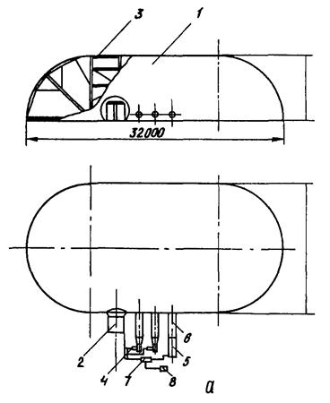
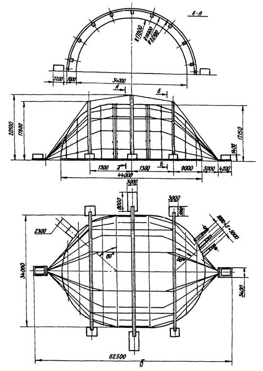
а - сооружение УПС-16-ТМ; б - сооружение УРС-34/44; 1 - оболочка; 2 - шлюз; 3 - металлический каркас; 4 - вентиляционный агрегат (2 шт.); 5 - теплогенератор; 6 - воздуховод (3 шт.); 7 - шкаф управления; 8 - электрический щит
Черт. 5
5.1. При организации монтажных городков из инвентарных зданий следует руководствоваться следующими нормами:
служебные помещения (м2/чел.): контора - 4: помещения для технической учебы и собраний - 0,75; диспетчерская - 7;
санитарно-бытовые помещения (м2/чел.): бытовые бригадные помещения - 0,6, гардеробная - 0,9; душевая - 0,82; умывальная - 0,2; для личной гигиены женщин (м2/50 чел.) - 1,76;
помещения для сушки одежды и обуви (м2/чел.) - 0,2;
туалеты (м2/чел.): мужские - 0,09, женские - 0,14;
здравпункты - до 70 м2;
помещения (м2/чел.): для отдыха, защиты от солнечной радиации и атмосферных осадков - 0,7, для обогрева рабочих - 0,1.
Для комплексных бригадных помещений (гардеробные, умывальные и помещения для отдыха) расчетный показатель равен 1,8 м2/чел.
Согласно приведенным нормам определяют необходимую площадь инвентарных зданий различного назначения, умножая расчетный показатель на общее количество рабочих (для гардеробных помещений) и на количество работающих в наиболее многочисленную смену (для душевых, сушилок, туалетов, помещений для обогрева и др.).
5.2. Инвентарные здания на МП необходимо размещать возможно ближе к местам производства монтажных работ, обеспечивая при этом наименьшую протяженность инженерных коммуникаций и дорог.
5.3. Компоновка инвентарных зданий должна обеспечивать наиболее благоприятные условия для естественного освещения и проветривания помещений, исключая возможность воздействия (в санитарном и пожарном отношении) одного здания на другое.
Рекомендуемые планировки и основные данные по инвентарным зданиям приведены в приложении 5.
5.4. Инвентарные здания должны быть оборудованы водопроводом, канализацией, отоплением, вентиляцией, электрическим освещением и при необходимости горячим водоснабжением, для чего в проекте МП должна быть выполнена соответствующая документация.
5.5. Технико-экономические и эксплуатационные показатели и объемы работ по различным вариантам монтажных городков приведены в табл. 4.
Таблица 4
|
Для монтажных городков на |
|||||
|
25 чел. |
50 чел. |
75 чел |
100 чел. |
150 чел. |
|
|
Технико-экономические: |
|||||
|
общая площадь территории, м2 |
862,5 |
1000 |
1400 |
1950 |
2375 |
|
площадь застройки, м2 |
294 |
354 |
509 |
704 |
791 |
|
коэффициент застройки, % |
34 |
35 |
36 |
37 |
33 |
|
полезная площадь, м2 |
127 |
181 |
300 |
415 |
623 |
|
полезная площадь на одного рабочего, м2/чел. |
5,09 |
3,62 |
4,00 |
4,00 |
4,15 |
|
площадь озеленения, м2 |
137 |
250 |
236 |
300 |
410 |
|
коэффициент озеленения, % |
16 |
25 |
16 |
15 |
17 |
|
Объем работ: |
|||||
|
планировка территории, м2 |
862,5 |
1000 |
1400 |
1950 |
2375 |
|
перевозка и монтаж, шт.: |
|||||
|
инвентарных зданий |
6 |
9 |
16 |
19 |
26 |
|
сборно-разборных зданий |
2 |
2 |
2 |
3 |
3 |
|
устройство пешеходных дорожек, м2 |
120 |
153 |
244 |
270 |
306 |
|
оборудование площадки для отдыха, м2 |
5 |
10 |
15 |
20 |
30 |
|
устройство питьевого фонтанчика, шт. |
1 |
1 |
1 |
- |
- |
|
монтаж автомата газированной воды, шт. |
- |
- |
- |
1 |
1 |
|
озеленение территории, м2 |
137 |
250 |
236 |
300 |
410 |
|
установка доски показателей, шт. |
2 |
2 |
2 |
2 |
2 |
|
устройство ограждений, м |
90 |
94 |
114 |
130 |
150 |
|
Эксплуатационные: |
|||||
|
расход тепла, ккал/ч |
27828 |
39228 |
64088 |
92620 |
1250 |
|
потребная мощность электроэнергии, кВт |
39,7 |
63,7 |
102,7 |
150 |
223 |
|
расход воды, л/с |
1,75 |
2,0 |
3,35 |
3,7 |
5,26 |
Обязательное
1. Необходимость участия монтажных организаций в проектировании угольных разрезов с целью обеспечения условий для комплектно-блочного монтажа оборудования установлена приказом Минуглепрома СССР, Минмонтажспецстроя СССР и Минтяжмаша СССР от 16 октября 1987 г. № 206/417/159.
Гипрохиммонтаж (или организация по его поручению) и перечисленные институты для оперативной связи между ними распоряжениями назначают ответственных представителей из числа квалифицированных специалистов.
4. Для обеспечения монтажной технологичности Гипрохиммонтаж и привлекаемые им другие организации (кроме работ, указанных в п. 2) участвуют в разработке институтами Минуглепрома СССР другой проектно-технической документации по объектам угольной промышленности, подлежащим монтажу организациями Минмонтажспецстроя СССР.
5. Работа по пп. 2 и 4 осуществляется Гипрохиммонтажем (или организацией по его поручению) по договорам с соответствующими институтами Минуглепрома СССР.
6. Для обеспечения комплектно-блочного монтажа оборудования при проектировании угольных разрезов должны соблюдаться требования СНиП 3.01.01-85, СНиП 3.05.05-64 и научно-производственно-технической программы "Блок-комплект", утвержденной постановлением Госстроя СССР от 31 декабря 1987 г. № 326, и настоящих ВСН.
7. Спорные вопросы между институтами Минуглепрома СССР и Гипрохиммонтажем (или организацией, действующей по его поручению) решаются на совместных совещаниях.
8. Институты Минуглепрома СССР, перечисленные в п. 3, обеспечивают представителям Гипрохиммонтажа (или организации по его поручению) рабочие места и создают необходимые условия для их работы.
Рекомендуемое
1. В техническом задании на проектирование МП должна быть учтена мощность электроэнергии, потребляемой монтажными кранами и механизмами, сварочным оборудованием, электроинструментом, наружным и внутренним освещением, зданиями и сооружениями производственного и вспомогательного назначения, монтажным городком.
2. В общем случае проект электроснабжения МП должен содержать:
планы магистральной и распределительной сетей;
планы наружной и внутренних сетей освещения;
заказные спецификации на электрооборудование и аппаратуру, кабельную и проводниковую продукцию, защитные средства и другие изделия и материалы;
пояснительную записку.
На чертежах следует применять условные обозначения, приведенные в таблице.
3. По характеристике окружающей среды МП (за исключением отдельных зданий и сооружений производственного и вспомогательного назначения, а также монтажных городков) является наружной площадкой с невзрывоопасной средой и по бесперебойности электроснабжения относится ко 2-й категории.
4. Для питания электроустановок должен применяться трехфазный переменный ток частотой 50 Гц и напряжением:
380-220 В - для силовых токоприемников;
220 В - для рабочего освещения;
12 В - для переносного освещения.
5. Для распределения электроэнергии следует применять распределительные пункты типа ШРС, а для силовой распределительной сети - кабели с алюминиевыми и медными жилами (например, медный кабель марок КРПТ, ПРГ). Для наружного освещения рекомендуя использовать кабели АВВГ и КРПТ с управлением освещением с помощью пакетных выключателей.
6. В проекте должна быть выполнена надежная система заземления (корпусов трансформаторов, электроаппаратуры, светильников, каркасов распределительных шкафов и др.) и регламентированы требования к периодической проверке величины сопротивления растеканию заземляющих устройств в процессе монтажных работ по горнотранспортному оборудованию.
7. Места установки токоприемников, пусковых аппаратов и силовых пунктов должны быть ограждены и иметь предупредительные знаки.
8. Распределительные пункты для питания монтажных кранов и механизмов необходимо подключать на подстанциях к индивидуальным фидерам. Прокладку кабелей следует выполнять на металлических конструкциях.
|
Наименование |
Обозначение |
Наименование |
Обозначение |
|
Трансформаторная подстанция |
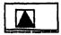 |
Подвесной светильник |
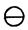 |
|
Силовой распределительный пункт |
|
Прожектор |
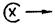 |
|
Ящик с рубильником и предохранителем |
|
а - количество ламп х б - мощность лампы в - высота подвеса |
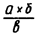 |
|
То же, но и со штепсельным разъемом |
|
Отметка плана площадки, например 50 лк |
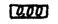 |
|
Ящик с понижающим трансформатором |
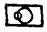 |
Нормируемая освещенность, например 50 лк |
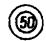 |
|
Сварочный трансформатор для электродуговой сварки |
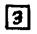 |
Пакетный трехполюсный герметический выключатель |
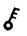 |
|
Сварочный однопостовой выпрямитель |
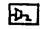 |
Двухполюсная розетка с 12 В заземляющим контактом 220 В |
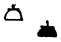 |
|
Сварочный пост ручной аргонодуговой сварки |
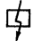 |
Линия силовой и осветительной сети при раздельном исполнении |
|
|
Сварочный однопостовой преобразователь |
|
Линия кабельной сети на металлических конструкциях |
|
|
Привод крана |
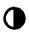 |
Гибкий токоподвод |
|
|
Устройство-приставка снижения напряжения холостого хода сварочного трансформатора |
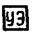 |
Линия кабельной сети на трассе |
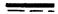 |
|
Магнитный пускатель |
|
Линия сети напряжением 42 В и ниже |
|
|
Штепсельное соединение |
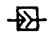 |
Линия контрольной сети |
|
|
Кнопочный 3-х штифтовой пост |
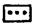 |
Линия пошла вверх Линия пришла снизу |
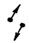 |
|
Коробка с наборными зажимами |
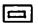 |
Привод лебедки |
|
|
Сварочный многопостовой выпрямитель |
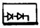 |
Линия осветительной сети при совмещенном исполнении |
|
9. От ящика с рубильником и предохранителями до потребителей кабель рекомендуется прокладывать в асбоцементной трубе на глубине около 250 мм от планировочной отметки земли с перекрытием траншеи бетонными плитами.
10. Пусковые аппараты следует крепить с помощью перфорированных монтажных профилей на высоте 1,6 м от обслуживающей площадки. Кабель от ящика с рубильником или от пускателя до земли защищают водогазопроводными трубами.
11. При выборе прожекторов должны быть указаны параметры их установки (высота, угол наклона и угол между оптическими осями прожекторов).
Рекомендуемое
1. Требуемое количество электросварочного оборудования определяют по формуле
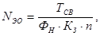
где ТСВ - трудоемкость сварочных работ, нормо-ч;
ФН - номинальный фонд времени единицы оборудования при односменной работе, ч;
КЗ - коэффициент загрузки оборудования, равный: 0,7 для ручной электродуговой сварки; 0,3 - для автоматической сварки под флюсом; 0,4 - для полуавтоматической сварки под флюсом; 0,5 - для полуавтоматической сварки в защитных газах и порошковой проволокой;
n - сменность работы оборудования.
Резерв оборудования на ремонт устанавливают в размере 10 %.
2. Требуемое количество однопостовых сварочных источников питания с номинальным током 1000-2000 А для термической обработки сварных соединений определяют по формуле
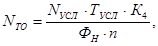
где NУСЛ - количество условных стыков;
ТУСЛ - трудоемкость термической обработки одного условного стыка;
К4 - коэффициент, равный 1,2, учитывает простои источников питания, связанные с техническим обслуживанием и ремонтом;
ФН - действительный годовой фонд времени работы единицы оборудования, равный 3935 ч;
n - сменность работы оборудования.
3. Потребность в сварочных силовых кабелях определяется из расчета 80 м (две нити) на один источник питания и 30 м (две нити) на один сварочный автомат (полуавтомат).
4. Потребность в силовых кабелях при термической обработке сварных соединений для подключения нагревательных устройств определяется из расчета 100 м (две нити) на один пост термообработки.
6. Потребность (м) в кислородных шлангах и шлангах для защитных газов LШК, а также в ацетиленовых шлангах LША подсчитывают соответственно по формулам
LШК=1,65×l×ni;
LША=2×l×ni;
где l - длина шлангов на одного газосварщика (газорезчика), принимается равной 40 м;
ni - количество постов.
6. Потребность в газовых баллонах определяют из соотношения
Nб=KS×ni,
где KS=2,2 - коэффициент, применяемый для подсчета баллонов ацетилена, пропана, аргона, углекислого газа, азота, гелия и горючих газов;
KS=4,5 - для подсчета кислородных баллонов при индивидуальном снабжении;
KS=3 - для подсчета кислородных баллонов при централизованном снабжении от рампы;
ni - количество постов.
7. При разработке плана размещения и перемещения сварочного оборудования необходимо учитывать очередность и объемы сварочных работ, а также расположение распределительных, силовых пунктов в соответствии с приведенной таблицей.
|
Вид работы |
Наибольшее расстояние до источника питания поста, м |
||
|
от распределительного силового пункта |
от рабочего места при работе |
||
|
на нулевой отметке |
на высотной отметке |
||
|
Сварка |
25 |
30 |
50 |
|
Термообработка |
10 |
20 |
40 |
Справочное
Сооружение УПС-16-ТМ
1. Габаритные размеры сооружения, м:
длина......................................................................................................... 32
ширина..................................................................................................... 16
высота....................................................................................................... 8
2. Габаритные размеры шлюза, м:
длина......................................................................................................... 2,5
ширина..................................................................................................... 2,1
высота....................................................................................................... 2,5
проем двери............................................................................................. 2´2
3. Площадь, перекрываемая оболочкой сооружения, м2.......................... 457
4. Объем сооружения, м3............................................................................. 2681
5. Габаритные размеры проема открытого торца сооружения, м........... 15,2´6
6. Рабочее избыточное давление, Па(кгс/см2)........................................... 98588(1,06)
7. Производительность одного вентиляционного агрегата, м3/ч........... 10000-15000
8. Установленная мощность вентиляционных агрегатов, кВт............... 8
9. Производительность теплогенератора, ккал/ч...................................... 250000
10. Установленная мощность теплогенератора, кВт................................ 4,5
11. Максимальный расход топлива, кг/ч................................................... 30
12. Установленная мощность осветительных приборов, кВт................. 7,6
13. Общая мощность электропотребителей, кВт...................................... 20,7
14. Масса сооружения, кг............................................................................ 7000
15. Срок службы, лет................................................................................... 8
16. Температура окружающего воздуха, °С.............................................. 50
17. Стоимость сооружения (комплект), тыс. руб...................................... 45,4
Сооружение УРС-34/44
1. Масса, кг:
тканевых ограждений............................................................................. 3500
металлоконструкций каркаса................................................................. 13800
металлоконструкций опорного контура............................................... 10000
тросовых подвесок.................................................................................. 1000
несущих тросов....................................................................................... 1000
пригруза средних арок............................................................................ 4´10000
пригруза крайних арок........................................................................... 2´15000
пригруза тросовых оттяжек................................................................... 2´20000
2. Масса пригруза опорного контура, кг/м............................................... 500
3. Район эксплуатации по СНиП 2.01.07-85:
ветровой................................................................................................... III
снеговой................................................................................................... II
Величины воздействий на сооружение
|
Режимы воздействий |
Скорость, м/с |
Нагрузка, кг/м2 |
Давление, Па |
|
|
I |
Ветер |
V£10 |
6 |
200 |
|
Снег |
70 |
|||
|
II |
Ветер |
V£20 |
25 |
400 |
|
Снег |
50 |
|||
|
III |
Ветер |
V>20 |
38 |
600 |
|
Снег |
25 |
|||
Рекомендуемое
Общий вид и планировка помещений
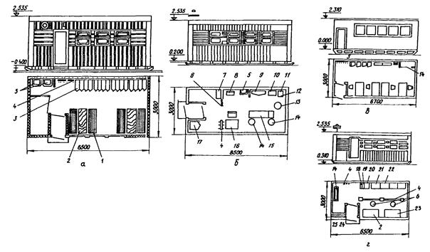
а - гардеробной с сушилкой (проект 31315); б - медпункта (проект 31315); в - конторы (проект С-1660); г - инструментальной кладовой (проект 31315); 1 - скамья-шкаф для инструмента; 2 - рабочий стол; 3 - шкаф для одежды; 4 - вешалка для одежды; 5 - раковина; 6 - занавес; 7 - санитарные носилки; 8 - полумягкий стул, 9 - шкаф для медикаментов; 10 - инструментальный столик; 11 - сухожаровой стерилизатор; 12 - перевязочный стоя; 13 - подставка для тазов Х-ООО-ОM; 14 - винтовой табурет; 15 - смотровая кушетка; 16 - стол врача; 17 - универсальный шкаф: 18 - подвески для чертежей; 19 - пирамида; 20 - бытовая лестница; 21 - стеллаж для абразивов; 22 - стеллаж с поддонами; 23 - верстак; 24 - поддон; 25 - скоба для длинномерного инструмента
Черт. 1
Помещение душевой (проект (ВД-1))
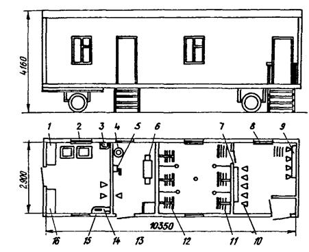
1 - ящик для белья; 2 - стиральная машина; 3 - раковина; 4 - электрический насос; 5 - ручной насос; 6 - отопительный котел; 7 - зеркало; 8 - радиатор отопления; 9 - вешалка; 10 - табурет; 11 - душевая сетка; 12 - решетка: 13 - ящик для угля; 14 - гладильная доска; 15 - электрический утюг; 16 - стеллаж для белья
Черт. 2
Производственно-складское помещение
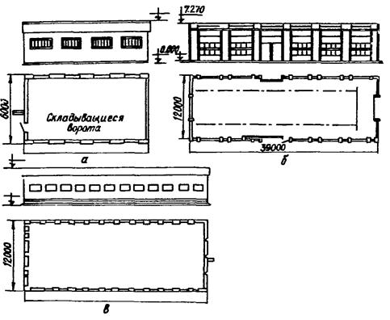
а - первый вариант планировки (проекты 420-09-15 и 420-09-16); б - то же, второй вариант (проект 31271); в - третий вариант (проекты С-1601 и С-1579)
Черт. 3
Вариант планировки монтажного городка на 25 чел.
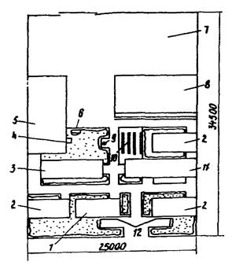
1 - контора; 2 - гардеробная с сушилкой; 3 - красный уголок; 4 - противопожарный щит; 5 - мастерская; 6 - устройство для мытья обуви; 7 - площадка для хранения материалов, изделий и стоянки автотранспорта; 8 - склад; 9 - питьевой фонтанчик; 10 - площадка для отдыха; 11 - душевая; 12 - доска показателей
Черт. 4
Вариант планировки монтажного городка на 50 чел.:
1 - гардеробная с сушилкой; 2 - красный уголок; 3 - противопожарный щит; 4 - питьевой фонтанчик; 5 - устройство для мытья обуви; 6 - мастерская; 7 - площадка для открытого хранения материалов, изделий и стоянки личного автотранспорта, 8 - склад; 9 - площадка для отдыха; 10 - душевая; 11 - контора; 12 - доска показателей
Черт. 5
Вариант планировки монтажного городка на 75 чел.
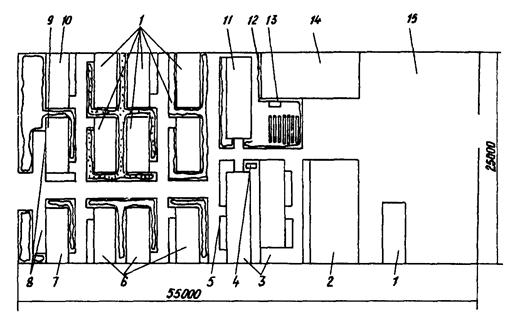
1 - инструментальная; 2 - склад; 3 - душевая; 4 - устройство для мытья обуви; 5 - питьевой фонтанчик; 6 - гардеробная с сушилкой; 7 - контора; 8 - доска показателей; 9 - диспетчерская; 10 - кабинет по технике безопасности; 11 - красный уголок; 12 - площадка для отдыха; 13 - противопожарный щит; 14 - мастерская; 16 - площадка для хранения материалов и изделий
Черт. 6
Вариант планировки монтажного городка на 100 чел.
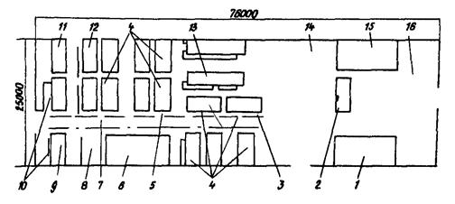
1 - оклад; 2 - инструментальная; 3 - устройство для мытья обуви; 4 - гардеробная с сушилкой; 5 - противопожарный щит; 6 - красный уголок; 7 - киоск газированной воды; 8 - площадка для отдыха; 9 - контора; 10 - доска показателей; 11 - диспетчерская; 12 - кабинет по технике безопасности; 13 - душевая; 14 - площадка для стоянки личного автотранспорта; 15 - мастерская; 16 - площадка для хранения материалов и изделий
Черт. 7
Вариант планировки монтажного городка на 150 чел.
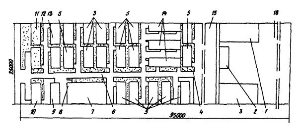
1 - мастерская; 2 - инструментальная; 3 - склад; 4 - устройство для мытья обуви; 5 - гардеробная с сушилкой; 6 - противопожарный щит; 7 - красный уголок; 8 - киоск газированной воды; 9 - площадка для отдыха; 10 - доска показателей; 11 - диспетчерская; 12 - контора; 13 - кабинет по технике безопасности; 14 - душевая; 15 - площадка для стоянки личного автотранспорта; 16 - площадка для хранения материалов и изделий
Черт. 8
СОДЕРЖАНИЕ